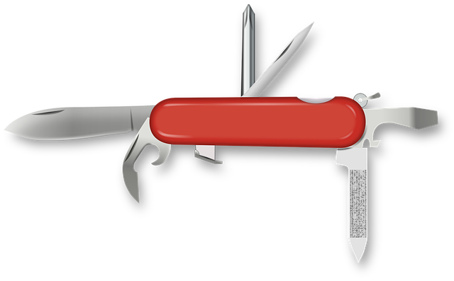

Ekonomsko-birotehnička i trgovačka škola Zadar, 6. svibnja 2026.
Izv. prof. dr. sc. Franjo Pehar | dr. sc. Nikolina Peša Pavlović
Sveučilište u Zadru, Odjel za informacijske znanosti i tehnologije
100 milijuna
korisnika za 60 dana
ChatGPT je dosegao 100 milijuna korisnika za oko 60 dana i bio je među najbrže rastućim aplikacijama u povijesti, no rekord je kasnije nadmašio Meta Threads s oko 5 dana. Usporedno, TikTok je trebao oko 9 mjeseci, Instagram oko 2,5 godine, WhatsApp oko 3,5, a Facebook oko 4,5 godine.
⏸️ Pitanje za sve prisutne
1. Tko je koristio AI ovaj tjedan? 🙋
a. školu, b. posao, c. iz znatiželje?
2. Danas? 🙋
3. A u zadnjih sat vremena?🙋
Kako AI zapravo funkcionira
Nije magija, već čista statistika
AI ne razumije već predviđa. Kao autocomplete na steroidima.
Radna memorija (tzv. context window)
AI modeli ne pamte sve zauvijek. Oni imaju "prozor" kroz koji prate tvoj trenutačni razgovor.
Što to znači?
Ako je chat predug, AI "zaboravlja" tvoje početne upute i može postati neprecizan.
Savjet
Za važne nove zadatke otvori novi chat, na taj način model ostaje fokusiran i precizan.
Mitovi vs. stvarnost
MIT
AI razumije što pišem
STVARNOST
AI predviđa sljedeću riječ. Nema razumijevanja, samo statistički obrasci.
MIT
AI uvijek govori istinu
STVARNOST
AI halucinira, tj. izmišlja činjenice s punim samopouzdanjem. Uvijek provjerite izvore!.
MIT
Trebam biti programer/ka
STVARNOST
Dovoljno je znati postaviti dobro pitanje. "Promptanje" je nova (digitalna) pismenost.
MIT
AI će preuzeti većinu poslova
STVARNOST
AI automatizira zadatke, ne čitave uloge. Transformira zanimanja, ne eliminira ih.
Razvojni put od alata do suradnika
1990–2005
Kalkulator
Excel, baze podataka
2000–2015
Tražilice
npr. Google
2015–2022
Chatbot
Digitalni sugovornik: npr. Siri, Alexa, ChatGPT
2022–danas
AI Agent
Digitalni suradnik: npr. ChatGPT-4, Claude
📍 MI SMO OVDJE
Što razlikuje AI agenta od chatbota?
💬 Chatbot
Pitanje → Odgovor
Pamti samo trenutni razgovor
Nema dodatnih alata i vještina
Čeka tvoj sljedeći upit
🤖 AI Agent
🧠 Pamćenje (dugoročno + kratkoročno)
🔧 Alati (pretraživanje, kod, datoteke, uloge, vještine, ...)
📋 Planiranje (razlaže na korake)
⚡ Akcija (izvršava bez čekanja)
Duboko istraživanje/pretraživanje
Za zadatke većeg opsega koristi agente za istraživanje umjesto običnog chata.
💬 Običan chat
Odgovara na temelju vjerojatnosti onoga na čemu je treniran. Brz, ali može halucinirati i u pravilu se ne poziva na izvore.
🔍 Deep Research Agent
Autonomno pretražuje desetke izvora i piše strukturirani izvještaj s citatima. Proces može trajati od nekoliko minuta do gotovo sat vremena.
Alati: Perplexity, OpenAI Deep Research, Gemini Deep Research; svi su besplatni ili nude ograničenu besplatnu verziju
🏖️ SCENARIJ 1
Agent za najam turističkih apartmana u Zadru
"Je li apartman slobodan 15–22 kolovoza 2027.?"
↓
Agent provjerava kalendar rezervacija ↓
Agent gleda pravila određivanja cijene (npr. sezona, trajanje) ↓
Agent sastavlja odgovor na jeziku gosta ↓
Agent šalje ponudu i uputu za plaćanje ↓ Vlasnik dobiva obavijest: "Nova rezervacija" ✓
Dok vlasnik noću spava, agent i dalje radi.
📚 SCENARIJ 2
Agent za izradu školskog projekta
Pripremi mi prezentaciju o turističkim trendovima u Dalmaciji za natjecanje iz poduzetništva.
➤ Predlaže strukturu prezentacije (npr. 7 slajdova)
➤ Dizajnira i oblikuje naslove i statističke prikaze
➤ Predlaže 3 izvora za popis literature
Ne piše umjesto tebe već istražuje, organizira, predlaže. Ti donosiš odluke.
📊 SCENARIJ 3
Agent u računovodstvenom servisu
📄📄📄
Agent
čita, kategorizira, provjerava
📊
→ Čita skenirane račune (PDF/slika)
→ Kategorizira troškove po vrstama
→ Provjerava stopu PDV-a
→ Priprema pregled za klijenta
→ Označava anomalije za provjeru od računovođe
Računovođa se bavi složenim slučajevima, a agent odrađuje rutinske zadatke.
Dostupni alati u 2026.
Svi dostupni besplatno ili kao ograničena besplatna verzija
ChatGPT
OpenAI
Pisanje, analiza, slike (DALL·E), glas, datoteke. Free: GPT-4o (ograničeno).
Claude
Anthropic
Dugi dokumenti, detaljna analiza, programiranje, tekst. Free: Claude 3.5.
Gemini
Google
Integracija s Docs/Drive, slike, pretraživanje. Free: Gemini 1.5.
Perplexity
AI tražilica
Integrira izvore. Idealan za istraživanje s referencama i citatima. Besplatna inačica.
Copilot
Microsoft
Integriran u OS Windows i Office. Web pretraga. Besplatan u Edge pregledniku.
Nije bitno koji alat koristiš već znaš li ga dobro koristiti. Najbolje: kombinirati više različitih alata za bolji rezultat.
Kako većina učenika koristi AI
Napiši mi esej o marketingu.
"Marketing je skup aktivnosti kojima poduzeće nastoji promovirati svoje proizvode i usluge. Ključni elementi marketinga su: 1) Istraživanje tržišta, 2) Promocija, 3) Distribucija..."
❌ Rezultat: generički, plitak, u pravilu neupotrebljiv (AI krivulja učenja)
Koliko uložiš, toliko dobiješ.
Ispravno postavljanje upita (prompt)
❌ Nedovoljno:
Napiši mi esej o marketingu.
✓ Znatno bolje:
Ti si marketinški stručnjak. Pišem seminarski rad za Poduzetništvo (3. razred EBTŠ Zadar). Tema: Kako mali obiteljski biznis u turizmu može koristiti Instagram. Napiši esej (400 riječi) s: uvodom, 3 konkretna savjeta s primjerima, zaključkom. Jednostavan jezik, bez žargona.
Anatomija dobrog upita
Svaki element koji bolje opisuje kontekst = bolji rezultat

Mali švicarski nožić
Ovo sve možete besplatno. Koliko od toga stvarno koristite?
✓ Dostupno besplatno
? Koristite?
✓ Chat / pisanje teksta
✓ gotovo svi
✓ Učitavanje datoteka (PDF, Excel, CSV)
? rijetki
✓ Analiza podataka i kôd (Code Interpreter)
? rijetki
✓ Generiranje slika (Gemini, DALL·E)
? poneki
✓ Pretraživanje s citatima (Perplexity)
? rijetki
✓ Glasovni razgovor s AI-jem
? gotovo nitko
✓ Pamćenje razgovora (ChatGPT Memory)
? gotovo nitko
Već imate švicarski nož. Većina koristi samo jednu oštricu.
⚠️
Stvarni izazovi u radu s AI alatima
Čega moramo biti svjesni?
Halucinacije: AI je uvjerljivi lažljivac
Što znači da "halucinira"?
AI se priviđaju stvari i nerijetko izmišlja statistički uvjerljive "činjenice", te ih predstavlja kao istinite i pouzdane.
Zašto se to događa?
AI ne pretražuje internet — bazira se na trening skupu (knowledge cut-off)
AI predviđa najvjerojatniju sljedeću riječ na temelju konteksta:
"Volim piti" → kavu
"Ako pada kiša, uzmi" → kišobran
"Glavni grad Hrvatske je" → Zagreb
Stvarni primjer:
Američki odvjetnik dobio je sudsku opomenu jer je predao tužbu s 6 izmišljenih presedana, a sve je generirao ChatGPT. Obrana: "nisam znao da AI može halucinirati."
Primjer halucinacije
Upit:
Koliko iznos BDP Hrvatske za 2024. godinu?
AI odgovor:
"BDP Hrvatske za 2024. godinu iznosi 87,3 milijardi eura, prema podacima Državnog zavoda za statistiku objavljenim u veljači 2025., što predstavlja rast od 4,2% u odnosu na prethodnu godinu."
❌ Ova brojka nije provjerena. AI je ovo generirao uvjerljivo, oprez: može biti netočno!
Pravilo:
Ako ne možeš navesti točan i relevantan izvor informacije, pametnije je ne koristiti.
⚠️ Opasna zamka: "Ulizivanje"
Tehnički pojam: Sikofancija (eng. sycophancy).
AI modeli su trenirani da budu "korisni", pa često navode ono što misle da želiš čuti.
❌ Ako ga pitaš: "Zar moja ideja o X nije vrhunska?", sustav će vjerojatno uzvratit "Da!", pa čak i ako je ideja prosječna ili loša.
Zlatno pravilo: budi neutralan u postavljanju pitanja kako bi dobio realniji odgovor sustava!
AI kao najstroži učitelj
Nemoj tražiti da AI piše umjesto tebe. Pusti da te tjera na razmišljanje!
"Evo mog nacrta eseja. Pronađi 3 najslabije točke u mojoj strukturi i logici te mi objasni slabosti i gdje su potrebni jači dokazi."
Rezultat: Dobiješ bolju ocjenu, ali si zapravo ti naučio lekciju, a ne AI model.
Akademski integritet
Dozvoljeno vs zabranjeno nije ključno pitanje. Važnije je što smo naučili.
📝 Ako AI piše umjesto tebe → nikad nećeš naučiti pisati
📊 Ako AI analizira umjesto tebe → nećeš razviti logičko i kritičko razmišljanje
🔍 Ako zajedno istražujete i ti u konačnici provjeravaš i donosiš odluke → to je korisna suradnja
Škola te priprema za posao gdje će poslodavca zanimati tvoje, a ne mišljenje AI-a.
Privatnost: što AI zna o tebi
⚠️ Osnovna pravila:
Sve što napišeš u besplatni AI alat (vjerojatno) se koristi za treniranje velikih jezičnih modela (LLM).
Nemoj učitati:
❌ Lozinke, OIB, br. bankovne kartice, adresu
❌ Povjerljive poslovne ili školske dokumente
⚠️ Osobne priče, zdravstvene informacije, informacije o drugima
Rule of thumb: Ako to ne bi napisao/la na javnom forumu, nemoj slati AI-ju.
AI i tržište rada iz ekonomska perspektiva
Koji zadaci su izloženi/ugroženi?
🔴 Visoki AI rizik
Rutinski rad
Unos podataka i obrada računa
Standardne korisničke usluge
Osnovna izrada izvještaja
Prijevodi tipskih dokumenata
🟢 Niski AI rizik
Kreativni i suradnički rad
Savjetovanje klijenata
Upravljanje projektima
Pregovaranje i prodaja
Mentorstvo i obrazovanje
AI i tržište rada: što nastaje u simbiozi?
🆕 Novi poslovi
Nove uloge
AI projekt menadžer
Prompt dizajner (u svim sektorima)
AI etičar / revizor
Analitičar AI podataka
🔄 Transformacija
Uloge koje se mijenjaju
Računovođa + AI alati
Marketing + AI stvaranje sadržaja
Ljudski resursi (HR) + AI trijaža
Turistički agent + AI personalizacija
Tvoj zadatak: ostati koristan na tržištu rada kompetentno koristeći sve relevantne tehnologije, pa tako i AI.
Što možemo očekivati kroz 2-3 godine
🗣️ Multimodalni agenti: istovremeno tekst + slika + glas + akcija
🔗 Agentski procesi u svim sektorima:turizam, logistika, financije, pravo, ...
🇪🇺 EU AI Act: Europa regulira AI: transparentnost, standardi, odgovornost
💼 AI kao alat gotovo na svim radnim mjestima: samo je pitanje da li ih znamo koristiti
📈 VAŠA PERSPEKTIVA
Što vi, kao budući ekonomski stručnjaci, trebate pratiti?